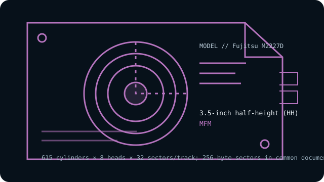

[ INDIVIDUAL COMPONENT // HARD DISK DRIVES ]
Fujitsu M2227D
40 MB-class 3.5-inch half-height MFM drive with eight data heads. This entry describes the named model, not every drive with similar markings.

IDENTIFICATION: Record the complete label, suffix, revision and controller details before handling. Do not substitute a related model’s geometry or encoding based on appearance alone.
Model specifications
| Exact model | Fujitsu M2227D |
|---|---|
| Catalog classification | MFM and early magnetic drives |
| Capacity | Approximately 40 MB formatted (about 51 MB unformatted in some references) |
| Form factor | 3.5-inch half-height (HH) |
| Interface | ST-506-compatible, separate control and data cables |
| Recording method | MFM |
| Drive geometry | 615 cylinders × 8 heads × 32 sectors/track; 256-byte sectors in common documented setup |
| Host-controller compatibility | Use a compatible MFM ST-506 controller that supports the M2227D’s eight-head geometry and 256-byte sector format, plus matching cabling and drive-select/termination configuration. Host BIOS and controller format support must be verified; do not assume the common 512-byte PC CHS convention. |
| Historical caveat | A nominal “40 MB” does not itself define the host geometry: capacity depends on sector length and formatting. The M2227D’s documented 256-byte sector configuration is easy to misconfigure when using later PC controllers designed around 512-byte sectors. |
Host-controller compatibility
Use a compatible MFM ST-506 controller that supports the M2227D’s eight-head geometry and 256-byte sector format, plus matching cabling and drive-select/termination configuration. Host BIOS and controller format support must be verified; do not assume the common 512-byte PC CHS convention.
- Confirm the full model and revision on the label, controller make/model, cable pinouts, power requirements, drive-select jumpers, and termination before connection.
- Verify that the controller supports the exact encoding, CHS geometry and sector size shown above; controller and BIOS translations can vary between systems.
- Do not attach this drive directly to modern SATA, IDE/ATA, SCSI or USB ports. Any bridge must explicitly support the legacy ST-506/ST-412 signaling and drive format; connector resemblance is not electrical compatibility.
Historical and preservation notes
The M2227D is distinct from its related M2226D; check the complete suffix and the applicable Fujitsu document. The 3.5-inch form factor is mechanical and does not imply IDE/ATA compatibility.
These drives are decades old. If data matters, avoid exploratory low-level formatting, repeated power cycling or writes; preserve the original controller settings and seek qualified recovery help for a failing mechanism. Treat any catalog capacity as approximate until the original manual and host configuration are checked.
Sources & further reading
- Fujitsu M2226D/M2227D brochure (archival scan)Fujitsu brochure covering the M2227D model family; confirm the D model and revision on the actual drive.
- Fujitsu M2227D model geometry and setupIndependent MFM/ST-506 model listing including geometry and 256-byte sector details.
Use the model-specific documentation for the full label and revision. Third-party archival listings are useful cross-references but may summarize a family or use rounded capacity values.